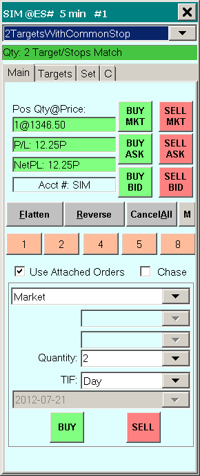
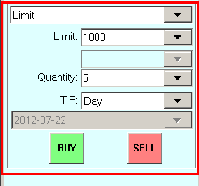
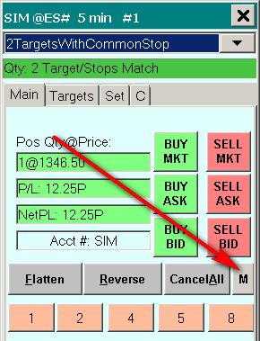
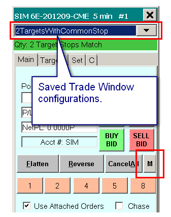
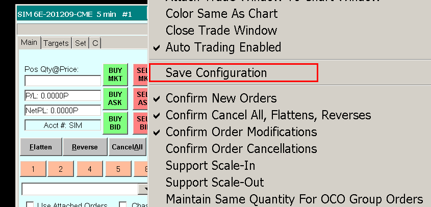

Basic Trading and the Trade Window
- Introduction
- Entering an Order from the Trade Window
- Trade Window Controls
- Main/C >> Position Quantity@Price
- Main/C >> Open Profit/Loss (P/L)
- Main/C >> Daily or Net Profit/Loss (DailyPL / NetPL)
- Selecting Trade Account for Chart / Trade DOM
- Main/C >> Flatten (Flatten and Cancel)
- Main/C >> Reverse (Reverse and Cancel)
- Main/C >> Cancel All
- Main/C >> Order Quantity Buttons
- Main/C >> BE (BreakEven button)
- Main/C >> Use Attached Orders
- Main/C >> Menu (M) button
- Main/C >> Menu >> Trade Simulation Mode On
- Main/C >> Menu >> Trading Locked
- Main/C >> Menu >> Attach Trade Window to Chart Window
- Main/C >> Menu >> Close Trade Window (chart specific)
- Main/C >> Menu >> Auto Trading Enabled - Global
- Main/C >> Menu >> Save Configuration
- Main/C >> Menu >> Order Confirmations
- Main/C >> Menu >> Orders
- Main/C >> Menu >> Settings
- Main/C >> Menu >> Chart Trade Mode On
- Main/C >> Menu >> Trading Chart DOM On
- Main/C >> Menu >> Show Order Fills
- Main/C >> Menu >> Only Orders From Chart
- Main/C >> Menu >> Use Attached Orders (chart specific)
- Main/C >> Menu >> Customize Chart/Trade DOM Columns
- Main/C >> Menu >> Trading Keyboard Shortcuts Enabled
- Main/C >> Menu >> Help
- Main/C >> Buy Bid
- Main/C >> Buy Mkt
- Main/C >> Buy Ask
- Main/C >> Sell Bid
- Main/C >> Sell Mkt
- Main/C >> Sell Ask
- Main >> Order Type
- Main >> Price Boxes
- Main >> Order Quantity (Quantity)
- Main >> TimeInForce (Time in Force)
- Main >> Date-Time setting
- Main >> Buy
- Main >> Sell
- Targets tab (Attached Orders)
- Trade Window 'Set' Tab
- Set >> Stop-Limit Order Limit Offset
- Set >> Auto-Set Prices Offset for OCO Buy and Sell Orders
- Set >> Maximum Chase for Chase Limit Orders
- Set >> Move to BE Offset
- Set >> Use Config Name as Text Tag
- Set >> Text Tag
- Set >> Button 1-6 Quantity
- Set >> DefaultQuantities
- A >> Flatten and Cancel at Set Time
- A >> Spread Orders
- Opening Trade Window for Chart or Trade DOM
- Attaching Trade Window to Right Side of Chart or Trade DOM
- Trade Window is Missing or Does Not Appear
- Trade Window Settings Not Applying to Chart or Trading DOM
- Trade Window Linking
- Setting the Colors of the Trade Window Buttons
- Enabling/Disabling Trade Window Order Buttons
- Using and Changing Between Different Trade Window and Attached Orders Configurations
- Trade Window Configuration Causing Existing Trade Window Settings to be Changed
- Price Formatting
- Trading from the Keyboard, Pointer, and Control Bar
- Order Types (opens a new page)
- Hiding Profit/Loss on Trade Window
- Rejected Market Order When Using Flatten or Reverse Because of Position Limit Exceeded
- Flattening Position at Same Time of Fill Resulting in New Position
- Nonresponsive Trade Order
- Using Order Fill Calculated Trade Position Data for Independent Position Tracking
- Flattening All Non-simulated Positions and Canceling All Orders in a Single Operation
- Adjusting Size of the Trade Window
Introduction
The Trade Window is used for non-chart based order entry and for settings for order entry from a chart, Chart DOM, or Trade DOM. Each chart has its own Trade Window. Each Trade Window is independent from each other and is for a particular chart or Trade DOM.
To open this window, go to a chart or Trade DOM and select Trade >> Open Trade Window for Chart from the menu. For further information, refer to Opening Trade Window.
The settings in the Trade Window are saved with the associated chart when you save your charts as a Chartbook. When you open your Chartbook, the Trade Window will be restored with the previous settings. You are also able to save a Trade Window configuration and easily change among various saved configurations within the Trade Window. Refer to Using and Changing Between Different Trade Window and Attached Orders Configurations.
Entering an Order from the Trade Window
This section explains basic order entry from the Trade Window. For descriptions for each of the controls on the Trade Window, refer to the Trade Window Controls section. To enter an order, follow these instructions:
- For the orders to be simulated, make sure there is a check mark by Trade >> Trade Simulation Mode On. If you want the orders to be sent to your Trading service, make sure there is not a check mark by Trade >> Trade Simulation Mode On.
- If you will be entering orders that will be sent to your Trading service, then make sure you are connected to the server by selecting File >> Connect To Data Feed. If this command is disabled on the menu, then this means you are already connected.
- Open or activate a chart for the symbol you wish to trade. You can open a chart through File >> Find Symbol.
- Select Trade >> Open Trade Window for Chart on the menu. This will open a Trade Window where you can enter orders and also adjust settings, such as Attached Orders, that are also used when entering orders from the chart or ChartDOM.
- Select the Main tab.
- If you wish to attach the Trade Window to the chart, press the Menu (M) button and select Attach Trade Window to Chart Window. Select this very same command again to detach it. 
- In the list box that contains Order Types, select the Order Type. Typically you will use either Market or Limit. Refer to Order Types for descriptions of each.
- If the selected Order Type type, requires a price, then enter price in the Limit or Stop price box. Refer to Price Formatting.
- Set the order Quantity. You can also press one of the quantity buttons on the Trade Window to quickly select the quantity.
- Set the Time in Force (TimeInForce) to what you require.
- Press either the BUY or SELL buttons.
- Or, set the Quantity and Time in Force (TimeInForce) to what you require and press one of the BUY BID, BUY MKT, BUY ASK, SELL BID, SELL MKT, SELL ASK buttons.
- By default, you will receive a confirmation before the order is processed. Press Yes to confirm. The confirmations can be disabled by pressing the Menu (M) button and removing the checkmark from the Confirm New Orders menu command.
- To view your Orders or your current Positions, refer to the Trading Information Windows documentation page. The Orders and the Position for the symbol of the chart are also displayed directly on the chart when Trade >> Chart Trade Mode On is checked on the menu.
- For instructions to enter orders directly from the chart or the Chart DOM, refer to Chart Trading.
Modifying an Order
To modify a working order, you first need to go to the chart or Trading DOM that you opened the Trade Window from and enable Trade >> Chart Trade Mode On on the menu.
You will then see the working orders displayed on the chart. To modify the price of the order, click and drag on the order line on the chart to the new price level.
To change the quantity of the order, left click on the quantity number button on the order line on the chart. For complete details, including modifying orders you cannot see, refer to Modifying and Canceling Orders on the Chart.
Canceling an Order
To Cancel an order do one of the following:
- Cancel the order directly from the chart. For instructions, refer to the Modifying and Canceling Orders on the Chart documentation.
- Select Trade >> Orders an Positions on the main menu. Select the Orders tab. Highlight the order you want to cancel from the list. Press the button labeled Cancel at the top of the Orders and Positions window.
- Press the Flatten button on the Trade Window to Flatten your position and cancel all orders for the symbol.
- Press the Cancel All button on the Trade Window. This will cancel all orders for the symbol.
- Add the Cancel All command to the Chart Trade shortcut menu. Right-click on the chart and select Cancel All to use this command.
In all of these cases, the cancellation request will be made to your connected Trading service or to the internal Sierra Chart Trade Simulation system. The order Status will then go to Pending Cancel. Once the order is actually canceled, its order Status will then be set to Canceled in the Trade >> Trade Orders Window list.
Trade Window Controls
To open the Trade Window for a chart or a Trade DOM, go to that chart or Trade DOM and select Trade >> Open Trade Window For Chart.
For complete instructions, refer to Opening Trade Window for Chart or Trade DOM.
The trade window has multiple tabs that are explained below. The tab that just has the letter C on it is a way to display a more compact form of the Trade Window. In the following sections, where it lists the options for Main/C it is referring to when either the Main tab or the C tab is selected.
Main/C >> Position Quantity@Price: / P: (Compact tab)
This box displays the current Trade Position Quantity and Average Price for the symbol the Trade Window is for. For complete information about non-simulated trade Position data, refer to Trade Positions Window.
Position Data Format: [quantity]@[position average price]
In Trade Simulation Mode, the Position Quantity and Average Price box on the Trade Window for the chart or Trade DOM, indicates the current simulated Trade Position data for the Symbol and selected Trade Account.
For complete information as to how the Trade Position Average Price is calculated and to choose the method of calculation that you want to use, refer to How Average Price for Positions is Calculated and Used.
In the case of when using a Position Average Price calculation method which is performed by Sierra Chart, there is no consideration of the commission setting for a Symbol in this average price calculation.
The following color settings in the Graphics Settings window affect this particular display:
- Chart Trade Window Position Long/Profit Background Color
- Chart Trade Window Position Short/Loss Background Color
- Chart Trade Window Position Flat Background Color
- Chart Trade Window Text Color
The font for this display is controlled through the operating system.
Main/C >> Open Profit/Loss (P/L)
For an example of the Open Profit/Loss, refer to the image to the right. It is prefixed with P/L:.
When there is a nonzero current Trade Position for the symbol of the chart or Trade DOM, the Open Profit/ Loss displays the Profit or Loss for the current Trade Position. There are various formats that can be displayed.
The calculation method is as follows: (Current Price - Average Position Price) * Position Quantity. This gives the Open Profit/Loss in Points.
It can be converted to other formats including a Currency Value by setting this through the Chart >> Chart Settings >> Trading >> Profit/Loss Format setting. Refer to the documentation for the Profit/Loss Format setting for the calculation method for Currency Value.
If there any problems with the display of the Profit/Loss, refer to Profit/Loss Calculations and Symbol Settings.
The Current Price used in the formula can be either the last trade price or the current Bid or Ask price. It is the last trade price if Global Settings >> General Trade Settings >> Use Bid/Ask for Open Profit/Loss Calculations is disabled. When this option is enabled, the current Bid price is used for short positions and the current Ask price is used for long positions.
Be aware, that if the market data feed is lagging by a significant amount of time, the currently displayed Open Profit/Loss will not be completely accurate. The degree of inaccuracy would be dependent on the amount of time of the lag and the price difference between the actual real-time data, and the received data at the time.
The following color settings in the Graphics Settings window affect this particular display:
- Chart Trade Window Position Long/Profit Background Color
- Chart Trade Window Position Short/Loss Background Color
- Chart Trade Window Position Flat Background Color
- Chart Trade Window Text Color
The font for this display is controlled through the operating system.
Main/C >> Daily or Net Profit/Loss (DailyPL / NetPL)
The Daily Profit/Loss indicates the Profit or Loss for the trading day not including the current open position Profit/Loss.
{kind=link}
Net Profit/Loss is the Daily Profit/Loss + Open Profit/Loss. For complete details, refer to Viewing Open, Daily, and Closed Profit/Loss on the Chart Trading page.
To display the Net Profit/Loss instead of the Daily Profit/Loss, enable Global Settings >> Chart Trade Settings >> Include Open P/L in Chart/Trade DOM P/L Display (NPL) .
These Profit/Loss values can be converted to other formats including a Currency Value by setting this through the Chart >> Chart Settings >> Trading >> Profit/Loss Format setting. Refer to the documentation for the Profit/Loss Format setting for the calculation method for Currency Value.
For help with any inaccuracy or any unexpected value for the Daily Profit/Loss, refer to Help with Daily Profit/Loss.
The following color settings in the Graphics Settings window affect this particular display:
- Chart Trade Window Position Long/Profit Background Color
- Chart Trade Window Position Short/Loss Background Color
- Chart Trade Window Position Flat Background Color
- Chart Trade Window Text Color
The font for this display is controlled through the operating system.
Main/C >> Trade Account (Selecting Trade Account for Chart / Trade DOM)
On the Trade Window for the Chart or Trade DOM, the list box containing the Trade Accounts displays the current selected Trade Account. Refer to the image below.
If this list box is not visible as shown in the image below, then check the Hide Trade Account List setting accessible through M/Menu >> Settings >> Hide Trade Account List on the Trade Window.
This list box allows you to select among the Trade Accounts which are available on the current connection you have to your Trading service when not in Trade Simulation Mode. Refer to the image below.
Whether in Trade Simulation Mode or not, multiple Trade Accounts are supported.
The Chart or Trade DOM the Trade Window is for, will only show Orders and Positions for the selected Trade Account and Symbol of that Chart or Trade DOM. Understand that each Chart or Trade DOM has its own Trade Window. You have to set the Trade Account correctly for each Chart or Trade DOM you want to see Orders and Positions on.
{kind=link}
In the case of when Trade >> Trade Simulation Mode On is disabled, to ensure you see the available Trade Accounts make sure there is a connection to the trading server by selecting File >> Connect to Data Feed if not currently connected.
If there have been any changes with the Trade Accounts on the username you are logged in with to your Trading service, then Reconnect to the Data Feed after those changes.
When Trade >> Trade Simulation Mode On is enabled, there is more than one available Trade Account that can be selected. The number of Trade Accounts is specified through Global Settings >> General Trade Settings >> Number of Simulation Accounts.
You can choose to add up to 1000 Trade Simulation accounts. You can use a different Trade Simulation Account to test different trading ideas or to separate trading activity for the same Symbol for whatever purpose.
In the case of Trade Simulation Mode, the Trade Accounts begin with the text Sim.
It is essential to make sure you are working with the correct Trade Window for the Chart or Trade DOM. This will be easily identified if it is attached. If it is not attached, then refer to the Opening Trade Window for Chart or Trade DOM section for instructions to open the Trade Window for Chart or Trade DOM. You may be looking at a Trade Window which is for a different Chart if it is not attached.
When Sierra Chart is connected to your Trading service account, if the available Trade Accounts you expect to see are not listed in the Trade Account list box, then contact your trading service about this. If they add an account, you will need to reconnect to the data feed to see it listed in the list of Trade Accounts.
When enabling Trade >> Trade Simulation Mode On, the most recently selected simulation account will then be reselected in the list of Trade Accounts. When disabling Trade >> Trade Simulation Mode On, the most recently selected non-simulated account will then be reselected in the list of Trade Accounts.
Although in the case of a sub instance of Sierra Chart, when disabling Trade Simulation Mode within that sub instance, the previously selected simulation account will remain selected since it is possible to use that with trading in the main instance of Sierra Chart which can be set to Trade Simulation Mode.
If you have different usernames with an external trading service you are using, each with a different Trade Account, then you need to use separate installations of Sierra Chart for each of those usernames. For documentation, refer to Using Multiple Data and Trading Services at the Same Time.
Main/C >> Flatten (Flatten and Cancel)
This command Flattens the position and Cancels all the working orders for the symbol, except for Market orders. When this command is used, the existing Trade Position quantity for the symbol is combined with the quantities of any market orders that will reduce the size of the Position. This is necessary to determine the order quantity to completely flatten the Position. Therefore, if you have a Position of +10 (long) and you have a market sell order with quantity 5, this command will enter a Sell Market order with quantity 5 and cancel all orders except for the working market orders.
If the Flatten command sees that there is not a Position, it will indicate this in the Trade >> Trade Service Log (Trade Order Error: Unable to Flatten or Reverse because a position does not exist for the symbol). Any outstanding working orders will still be canceled in this case.
There is also correct interpretation of partially filled Market orders. For example, if you have a Position of quantity +2, and there is a Sell Market order that is Open with a quantity of 2 and the Filled Quantity is 1, then the Flatten command will not issue a new market order.
If the Flatten command is disabled on the Trade Window, it will need to be enabled. Refer to Enabling/Disabling Trade Window Order Buttons.
The Trade Position which is used with the Flatten command is the same Position you see on the Trade Window. Refer to Position Quantity@Price.
The Flatten and Cancel command can also be selected from the Chart Trade shortcut menu which is displayed when right clicking on a chart or Trade DOM away from the price scale and market data columns. Refer to the image below. If the command is not listed on that menu, then add it through Global Settings >> Customize Chart Trade Menu.
{kind=link}
The Flatten and Cancel command can also be sent through a Keyboard Shortcut. Refer to Trading Keyboard Shortcuts.
When using the Flatten and Cancel command, it is recommended that you enable the Hold Market Order Until Pending Cancel Orders Are Confirmed option to avoid the possibility where the Market order which flattens the Trade Position gets rejected due to contract limits or margin requirements on the account. Since it will not be sent to the Trading service until the outstanding Target and Stop orders and other nonmarket orders are canceled. However, using this option means that there is going to be a delay with sending the Market order. If there is no acknowledgment of the canceling of the outstanding working orders like Attached Orders, then the market order will never be sent.
Main/C >> Reverse (Reverse and Cancel)
This command Reverses the current Trade Position with a Market order and Cancels all the working orders for the symbol, except for market orders.
The order quantity of the Market order will be equal to the amount to flatten the existing Trade Position plus the amount of the current Order Quantity setting on the Trade Window.
For example, if the current Trade Position is -3, the Order Quantity setting on the Trade Window is 2, there are currently no market orders outstanding, a Buy Market order will be sent with a quantity of 5. When it is filled, the resulting Trade Position will be +2.
When Attached Orders are used, there will be two separate market orders. One to flatten the Trade Position and another one to establish the new Position. This is necessary when using Attached Orders.
When this command is used, the existing Trade Position quantity for the symbol is combined with the quantities of any market orders that will reduce the size of the Trade Position. This is necessary to determine the order quantity to completely flatten the Position and avoid any unnecessary orders from being sent which would result in an incorrect final Position.
Therefore, if there is a current Trade Position of +10 (long) and there still is a Sell Market order outstanding with a quantity 5, meaning there is an effective Trade Position of +5, the Order Quantity setting on the Trade Window is 5, then this command will enter a Sell order with a quantity 10 and cancel all orders except for the working market orders. This will result in a new Trade Position of -5. If there is a +10 Position with no working market orders, the Order quantity setting on the Trade Window is 5, then this command will enter a Sell Market order with a quantity of 15. This will result in a new Trade Position of -5.
If the Reverse command sees that there is not a current Trade Position for the Symbol and Trade account, it will indicate this in the Trade >> Trade Service Log (Trade Order Error: Unable to Flatten or Reverse because a Position does not exist). Any outstanding working orders will still be canceled in this case.
There is also correct interpretation of partially filled Market orders. For example, if you have a Trade Position of quantity +2, and there is a Sell Market order that is Open with a quantity of 4 and the Filled Quantity is 1, then the Reverse command will not issue a new market order.
If the Reverse command is disabled on the Trade Window, it will need to be enabled. Refer to Enabling/Disabling Trade Window Order Buttons.
The Trade Position quantity which is used with the Reverse command is the same Trade Position you see on the Trade Window. Refer to Position Quantity@Price.
The Reverse and Cancel command can also be selected from the Chart Trade shortcut menu which is displayed when right clicking on a chart or Trade DOM away from the price scale and market data columns. Refer to the image below. If the command is not listed on that menu, then add it through Global Settings >> Customize Chart Trade Menu.
The Reverse and Cancel command can also be sent through a Keyboard Shortcut. Refer to Trading Keyboard Shortcuts.
When using the Reverse and Cancel command, it is recommended that you enable the Hold Market Order Until Pending Cancel Orders Are Confirmed option to avoid the possibility where the Market order which flattens the Trade Position gets rejected due to contract limits or margin requirements on the account, since it will not be sent to the Trading service until the outstanding Target and Stop orders and other nonmarket orders are canceled. However, using this option means that there is going to be a delay with sending the Market order. If there is no acknowledgment of the canceling of the outstanding working orders like Attached Orders, then the market order will never be sent.
Main/C >> Cancel All
This button will cancel all working orders for the Symbol and Trade Account the chart is set to.
If there are no working orders for the Symbol and Trade Account of the chart or Trade DOM, then this button will be disabled.
The Cancel All command can also be selected from the Chart Trade shortcut menu which is displayed when right clicking on a chart or Trade DOM away from the price scale and market data columns. Refer to the image below. If the command is not listed on that menu, then add it through Global Settings >> Customize Chart Trade Menu.
Main/C >> Order Quantity Buttons
On the Main and C tabs of the Trade Window there is a row of 6 quantity buttons. Refer to the image below.
These buttons allow you to quickly change the order quantity for new orders. The quantity that will be changed to is displayed on the button itself.
The quantity that these buttons will set is configured through the Set tab of the Trade Window. Set the order quantities in the Button 1-6 Quantity boxes.
To reset the buttons to the default quantities based upon the Default Order Quantity for the symbol, press the Default Quantities button on the Set tab. To modify the Default Order Quantity, you will need to edit the Global Symbol Settings for the symbol.
{kind=link}
{kind=link}
Keyboard Shortcuts for Preset Order Quantities
It is supported to configure keyboard shortcuts to select these preset Order Quantity buttons and change the current Order Quantity to the Quantity specified by the button. For instructions, refer to Trading Keyboard Shortcuts.
Control Bar Buttons for Preset Order Quantities
It is supported to add Control Bar buttons to select these Order Quantity Buttons and change the Order Quantity on the Trade Window to the Quantity specified by the button.
To configure a Control Bar with these buttons, refer to Control Bars.
In Global Settings >> Customize Control Bars >> Control Bar 1-8 , expand the Trading Commands list in the Available Control Bar Commands list.
You will then want to add the Order Quantity Button # buttons as you require.
Main/C >> BE (BreakEven button)
The BE button stands for Break Even. The BE button will move the Stop Attached Order to the Average Fill price of the parent order.
By default, selecting the BE button will only move the nearest attached order to the Average Fill price of the parent. This behavior can be modified by changing the setting of the Move to Breakeven (BE) Command setting found in Global Settings >> Chart Trade Settings.
If this option is set to Move All Stop Attached Orders and the option for Disable Order Confirmations - Global is not selected, then when selecting the BE button, a confirmation for each attached Stop order will be presented.
An offset relative to the Average Fill price of the parent order, can optionally be set on the Set tab of the Trade Window through the Set >> Move To BE Offset (Ticks) setting. This is set in ticks, where 1 equals 1 tick. If this is set to 1 and the Stop order is a Sell Stop, then the Stop order will be moved to 1 tick above the Average Fill price. If this is set to -1 and the Stop order is a Sell Stop, then the Stop order will be moved to 1 tick below the Average Fill price.
This command button has no effect on nonattached Stop orders.
{kind=link}
Main/C >> Use Attached Orders
For complete documentation for Use Attached Orders, refer to Use Attached Orders.
Main/C >> Menu (M) button
{kind=link}
The Menu (M) button lists a menu with various Trading related commands and options. Some commands apply globally and some commands apply only to the specific chart or Trading DOM the Trade Window is associated with. In this case they are labeled (chart specific) in the documentation.
On the Main tab of the Trade Window, the menu is labeled M. On the C (Compact) tab, it is labeled Menu.
Each Chart or Trading DOM, has its own Trade Window. Refer to Opening Trade Window for Chart or Trade DOM.
The commands which are not already listed on the top level Trade Menu are documented below.
Main/C >> Menu >> Trade Simulation Mode On
This is the same setting as Trade >> Trade Simulation Mode On.
Main/C >> Menu >> Trading Locked
This is the same setting as Trade >> Trading Locked.
Main/C >> Menu >> Attach Trade Window to Chart Window
This is the same setting as Trade >> Attach Trade Window to Chart Window.
Main/C >> Menu >> Close Trade Window (chart specific)
This command closes the Trade Window for the chart.
Main/C >> Menu >> Auto Trading Enabled - Global
This is the same setting as Trade >> Auto Trading Enabled - Global.
Main/C >> Menu >> Save Configuration
This command is used to save the current configuration of the Trade Window. Refer to the Using and Changing Between Different Trade Window and Attached Orders Configurations section.
Main/C >> Menu >> Order Confirmations (chart specific)
Each chart or Trade DOM has its own set of order confirmation options. Therefore, on some charts or Trade DOMs, you can have order confirmations enabled and on others you can have them disabled.
All of the order confirmations can be globally disabled through Global Settings >> Chart Trade Settings >> Disable Order Confirmations - Global. Therefore, uncheck this option to ensure that the below documented order confirmations will work.
To disable a particular order confirmation for a particular chart or Trade DOM do the following:
- Select Trade >> Open Trade Window for Chart to open the Trade Window for the specific chart or Trade DOM you are working with, if it is not already open. For specific details, refer to Opening Trade Window for Chart or Trade DOM.
- Select the Main tab.
- Press the M button depending upon which tab is selected. Refer to the image below.
- Select the Confirmations submenu. Refer to the images below.
- Disable the Confirmations that you do not want by removing the check mark.
{kind=link}
{kind=link}
Order Confirmations and changing the Trade Window Configuration: Refer to Trade Window Configuration Causing Existing Trade window Settings to be Changed.
Main/C >> Menu >> Confirmations >> Confirm New Orders (chart specific)
This command enables or disables the confirmation prompt when placing a new order from the Trade Window, the chart, Chart DOM, or Trade DOM. When checked, you will be asked to confirm an order. It is safest to keep this option enabled, to prevent inadvertent order entry.
For more information, refer to Order Confirmations.
Main/C >> Menu >> Confirmations >> Confirm Cancel All (chart specific)
This command enables or disables the confirmation prompt for the Cancel All button on the Trade Window for the chart or Trade DOM. This confirmation also applies to the Chart Trade shortcut menu Cancel All command.
For more information, refer to Order Confirmations.
Main/C >> Menu >> Confirmations >> Confirm Flatten/Reverse (chart specific)
This command enables or disables the confirmation prompt for the Flatten and Reverse buttons on the Trade Window for the chart or Trade DOM. This confirmation also applies to the Chart Trade shortcut menu Flatten and Reverse commands.
For more information, refer to Order Confirmations.
Main/C >> Menu > > Confirmations >> Confirm Order Modifications (chart specific)
This command enables or disables the confirmation prompt for Order Modifications from the Trade Window, the chart, Chart DOM, or Trade DOM.
For more information, refer to Order Confirmations.
Main/C >> Menu > > Confirmations >> Confirm Order Cancellations (chart specific)
This command enables or disables the confirmation prompt for Order Cancellations from the Trade Window, the chart, Chart DOM, or Trade DOM.
For more information, refer to Order Confirmations.
Main/C >> Menu >> Orders
Main/C >> Menu >> Orders >> Support Scale In (chart specific)
For complete information, refer to Scaling In section on the Attached Orders page.
Main/C >> Menu >> Orders >> Support Scale Out (chart specific)
For complete information, refer to Scaling Out section on the Attached Orders page.
Main/C >> Menu >> Orders >> Maintain Same Quantity for OCO Group Orders (chart specific)
Target and Stop Attached Orders (submitted at the same time and with the same OCO Group number) and OCO Limit and Stop orders, are contained within the same OCO order pair or group. In the Trade >> Trade Orders Window, you will see the OCO ID of the orders. The two orders will have the same OCO ID.
If 2 orders have the same OCO ID, then they are part of the same OCO pair. When you modify the quantity of one order in an OCO pair, the other order with the same ID will be adjusted to the same quantity if this option is enabled (checked).
If this option is not enabled (not checked), this will not occur. You need to also be aware that the Trading service you are using may also automatically adjust the quantities to be the same when you modify a quantity of one of the orders. Even if this option is not checked.
Main/C >> Menu >> Orders >> Use Stop-Limit Orders on ChartDOM (chart specific)
When this command is enabled, then a Stop order entry on the Chart DOM / Trade DOM will be submitted as a Stop-Limit order instead. The Limit price is automatically set and based upon Stop-Limit Order Limit Offset setting on the Set tab of the Trade Window.
Main/C >> Menu >> Orders >> Use MIT Orders on ChartDOM (chart specific)
When this command is enabled, then a Limit order entry on the Chart DOM / Trade DOM will be submitted as a Market if Touched order instead.
Main/C >> Menu >> Orders >> Use Limit Chase Orders (chart specific)
When this command is enabled, then Limit orders from the chart will be converted to Limit Chase Orders.
Main/C >> Menu >> Orders >> Cancel Orders on Flat Position (chart specific)
When this command is enabled, and the Trade Position Quantity for the chart goes from a nonzero Trade Position Quantity to a zero Trade Position Quantity, then any working orders for the Symbol and Trade Account of the chart will then be canceled.
The canceling of working orders only goes into effect when the Trade Position Quantity goes to 0 and remains there. If the Trade Position direction changes from long to short or short to long, the orders will not be canceled.
Main/C >> Menu >> Settings
{kind=link}
Main/C >> Menu >> Settings >> Color Same As Chart (chart specific)
When Trade Simulation Mode is disabled and the Trade Window is attached to a chart or Trade DOM, then the background color of the Trade Window will be colored the same color as the chart background color when this option is enabled.
Main/C >> Menu >> Settings >> Hide Pending Attached Orders (chart specific)
When Hide Pending Attached Orders option is enabled, then Attached Orders which are still in a Pending state are hidden on the chart or Trade DOM.
Main/C >> Menu >> Settings >> Ignore Quantity on Load Configuration
When Ignore Quantity on Load Configuration is enabled, and a Trade Window configuration is selected, the stored order quantity with that Trade Window configuration is ignored. Otherwise, the stored quantity is set on the Trade Window.
Main/C >> Menu >> Settings >> Reset Quantities on Symbol Change
When Reset Quantities on Symbol Change is enabled, and the symbol of the chart changes, the quantity on the Trade Window will be changed to the Default Order Quantity set for the symbol in the Global Symbol Settings and the Quantity buttons will be reset based upon this default order quantity.
Main/C >> Menu >> Settings >> Use Order Fill Calculated Position (chart specific)
For complete documentation for this setting, refer to Using Order Fill Calculated Trade Positions.
Main/C >> Menu >> Settings >> Order Allocation to Trade Accounts
Selecting this option brings up the Order Allocations to Trade Account window. This window is used to select trading accounts that will have exact copies of the orders that are placed for the chart from which this window is opened.
Full documentation and Setup Instructions can be found on the Order Allocation to Trade Accounts documentation page.
Main/C >> Menu >> Settings >> Hide Trade Account List
When Hide Trade Account List is enabled, the menu to select a Trade Account is not displayed on the Trade Window.
Main/C >> Menu >> Chart Trade Mode On
This is the same setting as Trade >> Chart Trade Mode On.
Main/C >> Menu >> Trading Chart DOM On
This is the same setting as Trade >> Trading Chart DOM On.
Main/C >> Menu >> Show Order Fills
This is the same setting as Trade >> Show Order Fills.
Main/C >> Menu >> Only Orders From Chart
This is the same setting as Trade >> Only Orders From Chart.
Main/C >> Menu >> Use Attached Orders (chart specific)
For complete documentation, refer to Use Attached Orders.
Main/C >> Menu >> Customize Chart/Trade DOM Columns
This is the same setting as Trade >> Customize Chart Trade DOM Columns.
Main/C >> Menu >> Trading Keyboard Shortcuts Enabled
This is the same setting as Trading Keyboard Shortcuts Enabled.
Main/C >> Menu >> Help
This opens this page of the documentation.
Main/C >> Buy Bid
This command will set the order type to Limit and set the Limit price to the current Bid price and will enter a Buy order with the specified Quantity and Time in Force.
The determination of the current Bid price is what Sierra Chart has received at the time of the order submission. This value can be old by the time the order gets to the exchange.
Main/C >> Buy Mkt
This command will set the order type to Market and will enter a Buy order with the specified Quantity and Time in Force.
Main/C >> Buy Ask
This command will set the order type to Limit and set the Limit price to the current Ask price and will enter a Buy order with the specified Quantity and Time in Force.
The determination of the current Ask price is what Sierra Chart has received at the time of the order submission. This value can be old by the time the order gets to the exchange.
Main/C >> Sell Bid
This command will set the order type to Limit and set the Limit price to the current Bid price and will enter a Sell order with the specified Quantity and Time in Force.
The determination of the current Bid price is what Sierra Chart has received at the time of the order submission. This value can be old by the time the order gets to the exchange.
Main/C >> Sell Mkt
This command will set the order type to Market and will enter a Sell order with the specified Quantity and Time in Force.
Main/C >> Sell Ask
This command will set the order type to Limit and set the Limit price to the current Ask price and will enter a Sell order with the specified Quantity and Time in Force.
The determination of the current Ask price is what Sierra Chart has received at the time of the order submission. This value can be old by the time the order gets to the exchange.
Main >> Order Type
In the list box that contains the order types, select the order type that you want to use for manual order entry. For documentation for all of the order types, refer to the Order Types documentation.
Main >> Price Boxes
There are 2 price boxes on the Main tab of the Trade Window. Either none, 1 or 2 price boxes are enabled, depending upon the selected order type. In a price box you can manually enter a price in the box or select one from the list. All of the current bid and ask prices from market depth data, if available, are listed. Refer to the Price Formatting section for the format for price entry. For additional information, refer to the Order Types documentation.
Main >> Order Quantity (Quantity)
The Quantity control in the Trade Window sets the quantity for the order to be submitted. This can be shares, contracts, or the number of currency units in the case of the Forex markets.
To open the Trade Window, refer to Opening Trade Window.
Select a number from the drop down list or manually enter the order quantity.
This order quantity applies to orders directly entered from the Trade Window, the Chart, Chart DOM, or Trade DOM.
The quantities listed in the list box are in increments of the Default Order Quantity for the symbol or symbol pattern in Global Settings >> Symbol Settings. For further information, refer to Global Symbol Settings.
The Order Quantity can also be quickly changed through the Order Quantity Buttons.
The Order Quantity can also be changed through the Trade Mode Box at the top left of the chart when in Chart Trade Mode. Refer to the Entering Orders from the Chart instructions.
{kind=link}
Main >> TimeInForce (Time in Force):
The order time in force. All of the type supported by Sierra Chart are listed. These include:
- Day
- Good till Canceled
- Good till Date-Time: In the case of CME order routing, only the Date portion is used. The Time is ignored. The order will cancel at the end of the trading day on that specific date. In other cases, how this particular Date-Time is used is Trading service specific.
- Immediate or Cancel
- All or None
- Fill or Kill
- Send Order at Time: When using this Time in Force, this means the order will be sent at the specified time. This will be a time in the future. The time is specified in the box below the Time in Force list box. The time is specified in this format: HH:MM:SS and is in the same Time Zone as the chart the Trade Window is for.
When using this Time in Force type, the order is going to be held on the Sierra Chart side until the the specified time is encountered. You can also select the order in the Trade >> Trade Orders Window and select [Send Held] from the menu to send it immediately. In this last case, the order then becomes an order which will be processed immediately without regard to time.
When in Trade Simulation Mode (Trade >> Trade Simulation Mode On is enabled), the Time In Force works as described in the Time In Force for Simulation section.
There is a separate Time in Force for Attached Orders setting that needs to be set. Only a limited number of options are available for this particular setting.
Not all external Trading services or exchanges will support all of the available Time in Force settings. If you use an unsupported type, the order will be rejected. This reject will be logged in the Trade Activity Log and also in Trade >> Trade Service Log.
{kind=link}
Main >> Date-Time setting
If you have specified a Time in Force of Good Till Date-Time , then this control lets you select the expiration date and time. Some services may not require a time, only a date. In those cases, the time is ignored.
Main >> Buy
Enter a Buy order using the specified order type, price, quantity, and time in force
Main >> Sell
Enter a Sell order using the specified order type, price, quantity and time in force.
Targets tab (Attached Orders)
For complete instructions for using Attached Orders, refer to the Attached Orders page.
{kind=link}
Trade Window 'Set' Tab
{kind=link}
Set >> Stop-Limit Order Limit Offset
{kind=link}
Set >> Stop-Limit Order Limit Offset >> Primary Orders
This setting applies to primary or main orders. Not to Attached Orders. This control specifies the number of Ticks or a Percentage of the current price of the symbol being traded, away from the Stop price that the Limit price for a Stop-Limit order is set to.
For example, if this is set to 4 Ticks, a Buy Stop-Limit order is entered at 100, the Tick Size is 1 for the symbol, the Limit price will then be automatically set to 104 with the order. This means that once the Stop is triggered at 100, the order will be filled at a price which is no worse than 104. For additional information, refer to the Stop-Limit Order Type.
Set >> Stop-Limit Order Limit Offset >> Attached Orders
This setting applies Attached Orders only. This control specifies the number of Ticks or a Percentage of the parent order price, away from the Stop price that the Limit price for a Stop-Limit type of Attached Order is set to. For example, if this is set to 4 Ticks, a Buy Stop-Limit Attached Order has a Stop price of 100, the Tick Size is 1 for the symbol, the Limit price will then be automatically set to 104 with the order. This means that once the Stop is triggered at 100, the order will be filled at a price which is no worse than 104.
Set >> Stop-Limit Order Limit Offset >> Offset Type
This specifies the offset type either as Ticks or a Percentage for the Limit offset for Primary and Attached Stop-Limit orders.
Set >> Auto-Set Prices Offset for OCO Buy and Sell Orders
The setting is used with the OCO Order Types. For the OCO order types that have the 2 OCO orders automatically set from a selected reference price, this is the number of Ticks from this reference price that the orders are set to. For example, if the selected reference price is 100, the Tick Size is 1 for the symbol being traded, and this is set to 10, then one of the OCO orders will have a price of 110 and the other will have a price of 90.
Set >> Maximum Chase for Chase Limit Orders
This setting applies to Limit Chase and Limit Touch Chase order types.
This is the maximum amount in Ticks, that a Limit Chase order will be adjusted by. For example, if a chase order has a limit price of 100 , the Tick Size is 1 for the symbol being traded, and this is set to 4, then the limit price will be adjusted by no more than 4 points.
Refer to the Limit Chase order types for more information about how this setting is used.
Set >> Move to BE Offset
This is the offset, in ticks, that will be applied to an attached order when the BE button is selected on the Main tab of the Trading window. Positive and negative values can be entered.
Set >> Use Config Name as Text Tag
When checked, the Configuration Name associated with these trades will be used for the Text Tag. For more information on Trade Configurations, refer to Using and Changing Between Different Trade Window and Attached Orders Configurations.
Set >> Text Tag
Any text entered into this field is displayed in the Note column of the Trade Activity Log for an entry for the order. This can be used for filtering specific trades using the Notes filter control on the Trade Activity Log window.
If the Use Config Name as Text Tag option is enabled, then this will use the selected Trade Configuration name instead of the Text Tag entry in the Notes column of the Trade Activity Log.
To quickly switch between different Text Tag names, use the Using and Changing Between Different Trade Window and Attached Orders Configurations functionality.
The Text Tag field has no length limitation in newer versions but it is not recommended to make this too long for efficiency reasons.
Set >> Button 1-6 Quantity
These text boxes are used to specify the order quantity for the 6 Quantity buttons on the Main and the C (Compact) tabs of the Trade Window for the chart. Enter the order quantity for each button that you want the specific button to have.
For additional information, refer to Main/C >> Order Quantity Buttons.
Set >> Default Quantities
Use the Default Quantities button to reset the preset Quantity Buttons to their default values.
A >> Flatten And Cancel at Set Time
The Flatten And Cancel at Set Time settings are used to Flatten a Trade Position and/or Cancel open Orders at a set time each day, for the Symbol and Trade Account of the chart or Trading DOM. In addition, these settings can also disable Automated Trading at the same time.
For this functionality to work, it is necessary that Sierra Chart is running, the chart or Trading DOM the Trade Window is associated with, is open and for live trading that Sierra Chart is connected to the trading server with File >> Connect to Data Feed.
- Flatten and Cancel at Set Time Options:
- Disabled: This setting disables the use of the Flatten and Cancel option. Therefore, any Position and Open Orders will not be changed at the time set in the Time Input.
- Flatten Position and Cancel Orders: This will Flatten the Position and cancel all open Orders at the time set in the Time Input, for the Symbol and Trade Account.
- Cancel Orders Only: This will cancel any open Orders at the time set in the Time Input, for the symbol and Trade Account. This will not flatten any Position.
- Time (Chart Time Zone): This sets the time at which the action defined in the Flatten and Cancel at Set Time will occur. This time is in the Chart Time Zone. For more information, refer to Time Zone.
- And Disable Auto Trading at Time: When this option is selected and a setting other than Disabled is set in the Flatten and Cancel at Set Time, then the setting Auto Trading Enabled - Chart is disabled at the time set in the Time setting.
This functionality only works for real-time trading whether simulated or non-simulated. It does not work during a Chart Replay or during a Back Test of an automated trading system.
A >> Spread Orders
These buttons within the Spread Orders section, allow the entry of a Spread Order. The following buttons are available:
- Enter Spread Order: Selecting this button will open the Settings window of the Spread Order Entry Study.
- Enable/Disable: This button will change its display depending on the state of the study. If the study is currently disabled and not functioning, then this button will display Enable. Selecting the Enable button will enable the monitoring of the spread prices relative to the entered Spread Entry Price, if the position has not been filled; or this enables the monitoring of the Target and Stop orders if the position has already been filled.
If the study is currently enabled and monitoring for either the Spread Entry Price or the Target or Stop prices, then this button will display Disable. Selecting the Disable button will disable the monitoring of the spread price relative to the entered Spread Entry Price if the order has not been filled; or this disables the monitoring of the Target and/or Stop orders if the position has already been filled and either a Target or a Stop position has been entered for the study. - Remove Study: This button will remove the Spread Order Entry study from the chart that is associated with the Trade Window on which this button is selected. Removing the study disables the study if it was active, and removes the study from the chart. Be aware that removing the study when it is monitoring for Target or Stop positions will remove this monitoring and any open positions will no longer be automatically closed when the price crosses the entered values for the Target or Stop orders.
Opening Trade Window for Chart or Trade DOM
Refer to the images below to understand the difference between attached and not attached Trade Window.
If the Trade Window is attached to a Chart or Trade DOM, then it is already open and visible and you can interact with the controls. If you cannot fully access the controls because it is partially cut off at the bottom, then detach it by selecting Trade >> Attach Trade Window To Chart. This will detach it.
After detaching it, if it is no longer visible then select Chart >> Reset Child Windows. After this select Trade >> Open Trade Window for Chart again.
If the Trade Window is not already to attached to the Chart or Trade DOM, then go to the Chart or Trade DOM you want to open the Trade Window for and select Trade >> Open Trade Window for Chart on the menu.
If after selecting this command the trade Window still not visible, then select Chart >> Reset Child Windows. After this select Trade >> Open Trade Window for Chart again.
To attach an open Trade Window which is not currently attached to a Chart or Trade DOM, go to the Chart or Trade DOM and select Trade >> Attach Trade Window To Chart.
{kind=link}
{kind=link}
Each Trade Window is Completely Independent from Others
If it is not already understood, it needs to be understood that each Chart and Trade DOM has its own Trade Window and each of these Trade Windows and all of the settings contained within them, are completely independent from Trade Windows for other Charts/Trade DOMs.
Therefore, changing the settings on one of them, will have no effect on any other Trade Window unless they are linked.
To link Trade Windows, refer to Trade Window Linking.
If the Trade Window is not attached to a chart, and you are using charts which are part of the main Sierra Chart window, not detached, and the chart which is in focus is maximized, as you switch among other charts, the prior visible Trade Window will be hidden and the Trade Window associated with the next active chart will be shown if it previously was.
Attaching Trade Window to Right Side of Chart or Trade DOM
To open the Trade Window, refer to Opening Trade Window for Chart or Trade DOM.
To attach the Trade Window to a Chart or Trade DOM, select Trade >> Attach Trade Window to Chart.
To attach the Trade Window to the right side of the Chart or Trade DOM, select Chart >> Chart Settings >> Trading. Enable the Attach Trade Window to Right Side option.
Trade Window is Missing or Does Not Appear
When opening the Trade Window and it is not attached to a Chart or Trade DOM, and it is not visible, then select Chart >> Reset Child Windows.
After this select Trade >> Open Trade Window for Chart again.
Trade Window Settings Not Applying to Chart or Trading DOM
Each chart and Trade DOM window has its own associated Trade Window. So changing the settings on one Trade Window for a different chart will have no effect on another chart or Trade DOM.
Therefore, if you are changing the settings on a Trade Window and they are not applying to the particular chart or Trade DOM you are using, then you are not changing the settings on the correct Trade Window.
In this case what you need to do is go to the chart or Trade DOM and select Trade >> Open Trade Window for Chart to open the trade window for that specific chart. If you do not see it, select Chart >> Reset Child Windows and try again.
For more information, refer to Open the Trade Window.
One solution to allow the settings from one Trade Window to apply to another Trade Window for a different Chart or Trading DOM is to use the Chart Linking feature and to link the Trade Window between two or more Charts/Trading DOMs.
Trade Window Linking
Each Chart or Trading DOM has its own associated Trade Window whether it is visible or not. Trade Windows can be linked together so that when changing any of the settings on one of them, the other linked Trade Windows also update to have identical settings.
This linking occurs whether a chart Trade Window that is linked is visible or not.
For complete documentation for this feature, refer to Chart Linking.
In the Chart >> Chart Settings you will need to enable the Trade Window Chart Linking option.
Setting the Colors of the Trade Window Buttons
The background color of the Trade Window can be colored based upon whether Sierra Chart is in Trade Simulation Mode or not. The color of the buttons can also be colored. To adjust the color setting, select Global Settings >> Graphics Settings. The following are the relevant color settings in Colors and Widths list box:
- Chart Trade Window Background LIVE:
- Chart Trade Window Background SIM:
- Chart Trade Window Buy Button Color:
- Chart Trade Window Sell Button Color:
- Chart Trade Window Flatten/Reverse/Cancel Button Color:
- Chart Trade Window Quantity Buttons Color:
After changing the colors of buttons, it is necessary to close the Trade Window by selecting Menu/M >> Close Trade Window on the Trade Window, for the changes to go into effect.
Enabling/Disabling Trade Window Order Buttons
The Buy Bid, Buy Ask, Sell Bid, Sell Ask, Flatten and Reverse buttons on the Trade Window can be enabled or disabled. It is not possible to hide the buttons. Only enable or disable them. Follow these instructions:
- Select Global Settings >> Chart Trade Settings on the menu.
- In the Trade Window Controls frame, enable or disable the buttons as required.
- Press OK.
{kind=link}
Using and Changing Between Different Trade Window and Attached Orders Configurations
You are able to save a Trade Window configuration which includes the current settings on the Trade Window, to a file.
The configuration will also include the current Attached Orders defined on the Targets tab of the Trade Window.
You can easily switch between these saved configurations. This is especially useful for rapidly switching between different Attached Orders configurations.
Also, the settings on the Trade Window are saved with the associated chart when you save your charts as a Chartbook. When you open your Chartbook, the Trade Window will be restored with the previous settings. To save the current chartbook, select File >> Save.
The images below provide visual guidance of using Trade Window configurations.
Saving Trade Window Configuration
To save the current trade window configuration, press the Menu (M) button on the Main or C tab of the Trade Window. Select Save Configuration on the menu. Enter a filename in the Filename box on the Save File window, and press Save. Refer to the images below for a visual for this menu.
If you wish to have a Trade Window configuration that does not contain any Attached Orders, then press the Remove button on the Attached Orders tab of the Trade Window and remove all of the Attached Orders before saving the Trade Window configuration.
Selecting/Using a Trade Window Configuration
To select a saved Trade Window configuration, select the one that you want to use in the list box that contains the Trade Window configuration files at the top of the Trade Window. Refer to the image below where this list box is highlighted. The Trade Window will be immediately updated with the saved configuration.
It is also supported to select / load a saved Trade Window configuration through Control Bar buttons for easy access through the Control Bar without having the Trade Window open. Refer to Control Bar Trade Window Configuration Buttons.
Delete Configuration File
To delete a Trade Window Configuration file, follow the below instructions:
- Press the Menu (M) button on the Main or C tab of the Trade Window.
- Select Save Configuration on the menu.
- In the Save File window, select the file in the list that you want to delete
- Press the Delete File(s) button.
- Press Yes to confirm.
- Press the Cancel button to cancel out of the Save File window.
- Another method to delete a Trade Window configuration file is to go to the Sierra Chart Data Files Folder on your system and delete the .twconfig file for the configuration that you want to delete. You can find the Sierra Chart Data Files Folder by selecting Global Settings >> General Settings. The Data Files Folder control displays the path to the folder.
Renaming Configuration File
To rename a Trade Window Configuration file, follow the below instructions:
- Open the Trade Window for the chart if it is not already open.
- Press the Menu (M) button on the Main or C tab of the Trade Window for the chart.
- Select Save Configuration on the menu.
- In the Save File window, select the file in the list that you want to rename
- Press the Rename button.
- Enter the new file name and press OK.
- Press the Cancel button to cancel out of the Save File window.
Trade Window Configuration Screen Images
|  |  |
{kind=link}
{kind=link}
Using a Trade Window Configuration File Provided to You
Follow the steps below to use a Trade Window configuration file that has been provided to you:
- Select Global Settings >> General Settings on the menu. Make a note of the path to the Data Files Folder as displayed in the Data Files Folder box.
- Save the Trade Window Configuration file (.twconfig extension) to the Data Files Folder on your system, that you made a note of in the previous step.
- Go to the Trade Window for the chart or Trade DOM or Open the Trade Window if it is not already open.
- In the list box at the top of the Trade Window that contains all of the Trade Window configuration files, select the one you have saved. Refer to Trade Window Configuration Screen Images which show this box highlighted.
{kind=link}
Linking Trade Window Configuration Between Charts
It is supported to apply all of the Trade Window settings including the selected Trade Window Configuration, to other charts that are linked to the chart for which you are changing the settings on the associated Trade Window.
To do this, refer to Chart Linking. You will need to enable the Trade Window linking option and set up the Link Number.
Trade Window Configuration Causing Existing Trade Window Settings to be Changed
When changing the Trade Window Configuration all of the existing settings on the Trade Window will be changed to the settings saved with the Trade Window Configuration file.
The order Confirmation settings are also saved as part of a Trade Window Configuration.
Therefore, when you selecting a Trade Window Configuration from the list box at the top of the Trade Window, the order confirmation options that were saved at that time with that configuration, will be restored. This something to keep in mind when it appears as though that changes to the order confirmations have reverted back.
In this case the solution is to set the Order Confirmation options as you require and then again follow the Saving Trade Window Configuration instructions.
Price Formatting
There are 3 ways to format prices when entering them into the Trade Window. When you are trading from the chart, Chart DOM, Trade DOM the price formatting is handled automatically. The format you use in Sierra Chart is not necessarily the format used by the software provided by your trading service. We use consistent standardized formats.
Decimal Format
This is a standard decimal number. For example, for the ES futures you can enter 1050.25, or just 1050.
Fractional Format
This is a number with a numerator/denominator fraction. The whole part of the number and numerator/denominator part of the number are separated by a space. For example, for Bonds you can enter 100 1/32, or 100 1.5/32, or just 100.
Short Fractional Format
This is a number using the short fractional notation where the denominator is specified through the Price Display Format in the Chart Settings window. For example, if the Price Display Format is set to 1/32, you can enter 100'1, or 100'1.5, or just 100.
Trading from the Keyboard, Pointer, and Control Bar
The following sections describe how to perform trades using shortcut methods created for the Keyboard, Right-Click on the Pointer device, and Control Bar buttons.
Trading Keyboard Shortcuts
Keyboard shortcuts can be assigned to common trading commands. These allow you to invoke a trading command from a keyboard.
These are configured through Global Settings >> Customize Keyboard Shortcuts. Assign the keyboard shortcut keys to any of the Trading Keyboard Shortcuts commands. For more information, refer to Customize Keyboard Shortcuts.
For these keyboard shortcuts for trading commands to be active on a chart or a Trade DOM, Trade >> Trading Keyboard Shortcuts Enabled must be checked on the menu for the particular Chart or Trade DOM. This option is specific to each individual Chart/Trade DOM and is not global.
If keyboard shortcuts are not enabled for the chart, there is an error message given in the Window >> Message Log when using one .
Additionally, it is necessary for Trade >> Chart Trade Mode On be enabled for the particular Chart or Trade DOM that you have enabled keyboard shortcuts for and that window must be in focus for it to receive those shortcuts. Otherwise, no action will be taken.
{kind=link}
Determining Order for Order Modification Keyboard Shortcuts
In the case of the keyboard shortcuts for order modifications which include the Target Order Tick Up/Down and the Stop Order Tick Up/Down commands, the particular order that gets modified is going to be the first found Target or Stop order nearest to the last trade price.
Keyboard Shortcuts for Trade Window Configurations
It is fully supported to configure a keyboard shortcut for a Trade Window Configuration. For more information about Trade Window configurations, refer to Using and Changing Between Different Trade Window and Attached Orders Configurations.
The first step is to set up a Control Bar button for the particular Trade Window configuration that you want. Refer to Control Bar Trade Window Configuration Buttons.
When that is complete, then you can set up a keyboard shortcut for particular configured Control Bar button which has been assigned to a Trade Window Configuration file. Refer to Customize Keyboard Shortcuts.
Keyboard Shortcut for Setting Focus to Trade Window Configuration
In the list of Customize Keyboard Shortcuts >> Trading Keyboard Shortcuts, there is the command Set Focus to Trade Window Configuration List Box which can be used to set the focus to the list box containing the available Trade Window Configuration files for the Trade Window for the chart.
You can use this to quickly set the focus to that list box and then use the arrow keys to select one of the available configuration files.
Trading Keyboard Shortcuts Caution
It is necessary to use trading keyboard shortcuts with caution because the operating system will repeatedly send the underlying trading command message to Sierra Chart when you press and hold the particular key combination that you set up for a particular trading command.
It is recommended to go into the operating system control panel and increase the Keyboard >> Speed >> Character Repeat >> Repeat Delay to eliminate the possibility of a repeated trading command message from being sent if you hold the key combination too long.
Custom Trading Keyboard Shortcuts
To create a custom trading keyboard shortcut that will submit an order based upon the specified parameters which include the side, order type, reference price and offset, follow the instructions below.
- Select Global Settings >> Customize Keyboard Shortcuts.
- In the Commands list, select Custom Trading Keyboard Shortcuts.
- Press the + beside that list item to expand the list.
- Select Custom Trading Keyboard Shortcut 1 or whatever number you want to configure.
- Assign the keyboard shortcut you want to that command. Refer to Customize Keyboard Shortcuts for detailed instructions.
- Press the Customize Trading Command button to open the configuration window for the particular Custom Trading Keyboard Shortcut selected.
- Set the Trade Type to either Buy or Sell for the order.
- From the Order Type list, select a particular order type to submit for the order.
- Set the Reference Price to either Bid, Ask or Last. The order price will be one of these prices selected.
- Set the Offset From Reference Price to the number of ticks, according to the Chart >> Chart Settings >> Tick Size, to add or subtract from the Reference Price. Use 0 for the offset to use the Bid, Ask, or Last prices without any modification. It is the Reference Price, along with this offset which calculates the final order price.
In the case of a Sell Stop order, the offset will need to be negative. In the case of a Buy Stop order the offset will need to be positive. - Go to a Chart which is in Chart Trading Mode, or to a Trade DOM and make sure there is a checkmark by Trade >> Trading Keyboard Shortcuts Enabled to enable trading keyboard shortcuts for that particular Chart or Trade DOM.
- When that particular Chart or Trade DOM is active, then use the particular keyboard shortcut assigned to invoke submitting the configured order.
- With any of the submitted orders, Attached Orders can be used. Make sure the Attached Orders are configured on the Trade Window and enabled for the chart or Trading DOM. Refer to Using Attached Orders and Attached Order Settings.
{kind=link}
Chart Trade Shortcut Menu
Common trading commands can be added to the right-click Chart Trading Shortcut Menu in order to allow quick access to these commands from the pointer.
The available options for the Chart Trading Shortcut Menu are found in Global Settings >> Customize Chart Trade Menu.
For information on how to add and modify the Chart Trading Shortcut Menu, refer to Customize Chart Trade Menu.
In order to use the Chart Trading Shortcut Menu, ensure that the option Trade >> Chart Trade Mode On is selected, and then right-click with the pointer in the chart to bring up the Chart Trading Shortcut Menu. Note that this menu may be displayed along with other options, depending on where the pointer is clicked.
Select the desired option from the list in order to perform trading from this menu.
Control Bar Trading Shortcuts
Common trading commands can be added to the Control Bar Buttons in order to allow quick access to these commands.
The available options for the Control Bar Buttons are found in Global Settings >> Customize Control Bars >> Control Bar # >> Trading Commands. For information on how to add Trading Control Bar Buttons refer to Customize Control Bars.
In order for the Trading Control Bar Buttons to function, it is necessary that the option for Trade >> Enable Keyboard Shortcuts is enabled. If this is not enabled, then when selecting the control bar button, a message will display in the Message Log stating Enable trading keyboard shortcuts with 'Trade >> Trading Keyboard Shortcuts Enabled'.
Once setup, the Control Bar buttons can be used to produce the specified action by simply clicking on the Control Bar Button.
Custom Control Bar Trading Shortcuts
It is also possible to combine the use of a custom Keyboard Shortcut with a Control Bar button specifically for trading. This can be used if a particular command is not available in the standard options for Trading in the Control Bar Buttons, or if additional control is desired. In order to create these Custom Control Bar Buttons, follow the instructions below:
- Follow the instructions to create a Custom Trading Keyboard Shortcut.
- Select Global Settings >> Customize Control Bar Buttons >> Control Bar Button #.
- In the Available Control Bar Commandslist, select Custom Trading Keyboard Shortcuts.
- Press the + beside that list item to expand the list.
- Select the appropriate Custom Trading Command/Shortcut # to add.
- Select the Add button to add the shortcut to the Control Bar. Refer to Customize Control Bars for detailed instructions.
- Select the Properties button to open the Properties window for the particular Custom Trading Control Bar Shortcut selected. Modify the properties as desired.
- Select OK to close the Properties window.
- Select OK to close the Customize Control Bar # window.
- If this is a new Control Bar that is not currently on the main Sierra Chart window, then follow the instructions for Customize Control Bars to add it.
- With any of the submitted orders, Attached Orders can be used. Make sure the Attached Orders are configured on the Trade Window and enabled for the chart or Trading DOM. Refer to Using Attached Orders and Attached Order Settings.
Changing Trade Order Quantity for Chart with Keyboard Shortcut
It is supported to change the trade Order Quantity within the chart with a keyboard shortcut.
- Go to the chart you want to change the Order Quantity for.
- Type with your keyboard the letters OQ.
- Type the order quantity you want to change to.
- Press the Enter key on the keyboard. The Order Quantity will be changed and can be verified through the Quantity setting on the Trade Window for the chart.
- Example: OQ5 followed by the Enter key.
Hiding Profit/Loss on Trade Window
It is possible to hide both the Open Profit/Loss and the Daily/Net Profit/Loss on the Trade Window so that they are not displayed.
To do this, go to the chart or Trade DOM that the Trade Window is for or is attached to and select Chart >> Chart Settings >> Trading.
Set the Profit/Loss Format setting to Do Not Display.
Rejected Market Order When Using Flatten or Reverse Because of Position Limit Exceeded
You will not experience this problem described in this section when using Teton Order Routing.
When using the Flatten or Reverse command buttons / functions, the Market order which is sent in response to these functions can be rejected by the Trading server when there is a working order or orders for the Symbol and Trade Account that also exist at the time the Market order is being sent.
The reason for the possible order rejection in this scenario is that the Trade Position limit in combination with the quantity of working orders has been exceeded. This is a limit that may be set on your Trading account by your Trading service.
The reason that this would occur when it logically seems like it should not is that the Trade Position that would result by executing all of the orders that are currently working including the new Market order, would cause the Trade Position limit to be exceeded.
For example, consider that your account has a Position limit of 2 contracts. Your current Trade Position is +2, and there are working Target and Stop orders each with a quantity of 2 and they are not in a server-side OCO group. Therefore, when both of those orders fill, the resulting Trade Position will be -2. If a Sell Market order is also sent with a quantity of 2, this will take the position to -4 according to the calculation by the Trading server. This is what causes the rejection.
Even though when flattening or reversing a Position the working orders are being canceled, those cancellations do not become complete at the time the Market order is sent. So it is for this reason, that the new Market order can be rejected.
When you look in the Trade >> Trade Activity Log for the line where the order is rejected, you will see the Order Action Source indicate something like: Order update (Order reject). Info: Position limit exceeded.. This error is not specific to any particular Trading service. It can occur with any of them.
You will not experience this problem when using Teton Order Routing.
The solution to this problem, when not using Teton Order Routing, is to enable this option: Hold Market Order Until Pending Cancel Orders Are Confirmed in Global Settings >> General Trade Settings.
The very best solution to this problem is to use Teton Order Routing. You will not experience this problem when using Teton Order Routing.
Flattening Position at Same Time of Fill Resulting in New Position
Consider the scenario where that you have a Trade Position for a particular Symbol, and a working Target and Stop order.
You flatten the Trade Position using the Flatten and Cancel command. However, at that same moment, either the Target order or Stop order has filled which has then offset the Trade Position so there is no longer a Trade Position.
This Flatten and Cancel operation then tries to cancel the Target and Stop orders and these are already canceled. Therefore, you receive two rejection messages indicating those orders are no longer working.
Additionally the market order which was meant to flatten the original Trade Position, which no longer exists, then instead establishes a new Trade Position in the opposite direction.
In this scenario you need to Flatten this new Trade Position.
Nonresponsive Trade Order
If a new order submitted, order modification, or order cancellation is not responded to from the external Trading service, then this will usually have three causes.
You will know this condition has occurred when you see the following text in the Trade >> Trade Service Log: Requesting order status for non-responsive order. Time since last action:.
When an order has not been responded to, it may not be possible to cancel the order. It may not even be a working order either. You will need to contact your broker for further help with the order.
The first cause is a network connectivity issue you have with the Trading service. This will eventually resolve itself, within one minute. However, you can also resolve it sooner by reconnecting to the data feed.
The second cause will be the external Trading server did not respond to these requests. This is going to be a trading server issue. In this case also reconnect to the data feed.
The third cause is that there is a mapping problem with the order response from the trading server to the order Sierra Chart has in its order list. Mapping is accomplished through the Service Order ID and Trade Account fields. If these are not exactly matching between the order response and the order Sierra Chart has in its list, there will be an issue. This last reason is a very very unlikely cause and if it exists, it is something that Sierra Chart would resolve with a particular Trading service and it will not occur again. Therefore, it is extremely unlikely for this to be applicable.
Using Order Fill Calculated Trade Position Data for Independent Position Tracking
It is supported to calculate and display Trade Position data based upon order fills from a specified Date-Time, so that in a particular chart or Trade DOM you can have independent Trade Position tracking which is different than the Trading service provided Trade Position data for a particular Symbol and Trade Account.
Follow the instructions below to accomplish this.
- Go to the particular Chart or Trade DOM that you want to use independent Trade Position data for.
- Follow the instructions to Open the Trade Window for Chart or Trade DOM.
- Go to the Trade Window for the chart and select Menu/M >> Settings >> Use Order Fill Calculated Position. There needs to be a checkmark by this option.
- Select Trade >> Only Orders from Chart on the main menu and make sure there is a checkmark by this option.
- For more details, refer to Order Fill Calculated Trade Position data.
- Select Chart >> Chart Settings >> Trading. Set Order Fills Start Date-Time to the starting date-time where you want the Trade Position data to be calculated from.
In the first box, specify the date in the format YYYY-MM-DD. In the second box specify the time in the format HH:MM:SS. This needs to be the Date-Time at or before the first fill for the Trade Position you want to track independently.
The time needs to be based upon the Time Zone setting.
Flattening All Non-simulated Positions and Canceling All Orders in a Single Operation
Follow the instructions below Flatten all non-simulated Trade Positions and Cancel all the non-simulated orders in a single operation. This includes Trade Position and Orders for all non-simulated trading accounts that you have access to.
- Select Trade >> Trade Positions Window from the main window menu.
- The Positions window will display.
- Make sure that Position >> Cancel Orders for Symbol When Flatten is enabled/checked if you also want to cancel the working orders for the same Symbol and Trade Account of a Position to be flattened. There will be no attempt to cancel the market orders for that Symbol and Trade Account.
- All of the current non-simulated Trade Positions will be displayed in the Positions list. Select the ones that you want to flatten. Multiple Positions can be selected by holding the Control key on the keyboard and left clicking on the Position lines. A range of Positions can be selected by selecting the first one, pressing the Shift key on the keyboard and then selecting the last one.
- Click the [Flatten] menu command to flatten the selected Trade Positions and also cancel the related Orders, if that option was enabled. The orders will be canceled first but the market order to flatten the Trade Position will be immediately sent after.
- Press Yes on the confirmation prompt to confirm the operation.
{kind=link}
*Last modified Friday, 24th March, 2023.